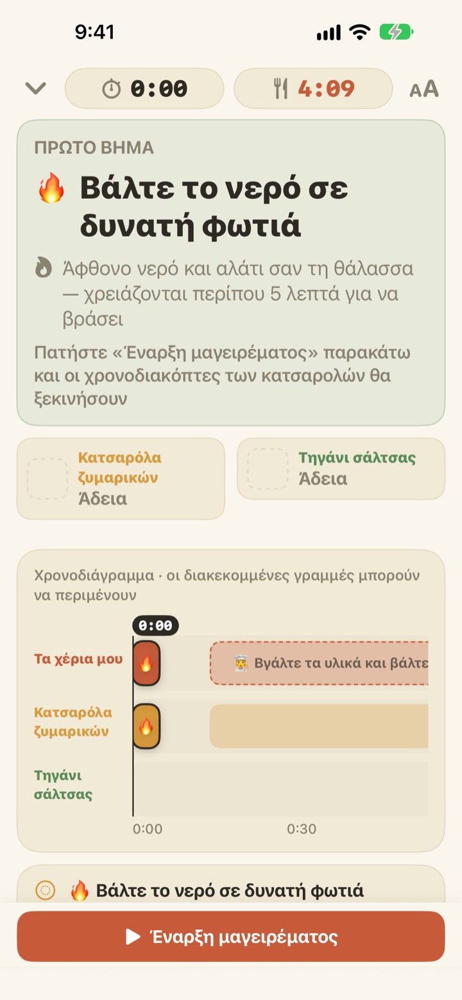
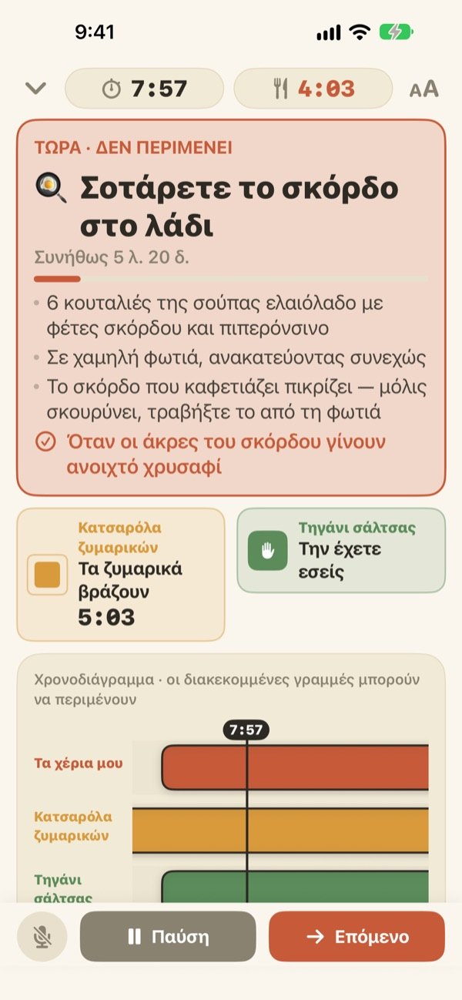
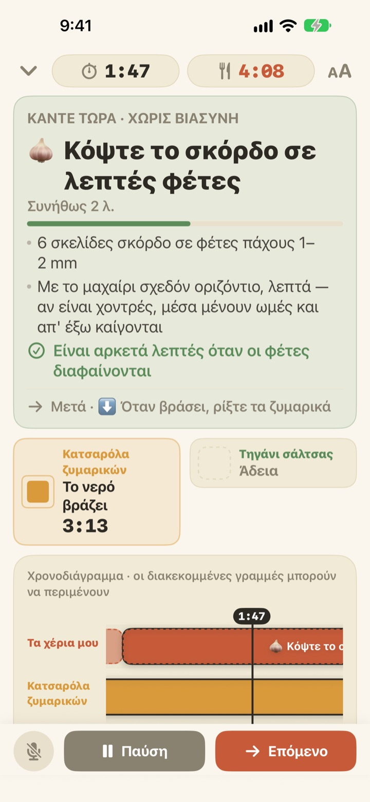
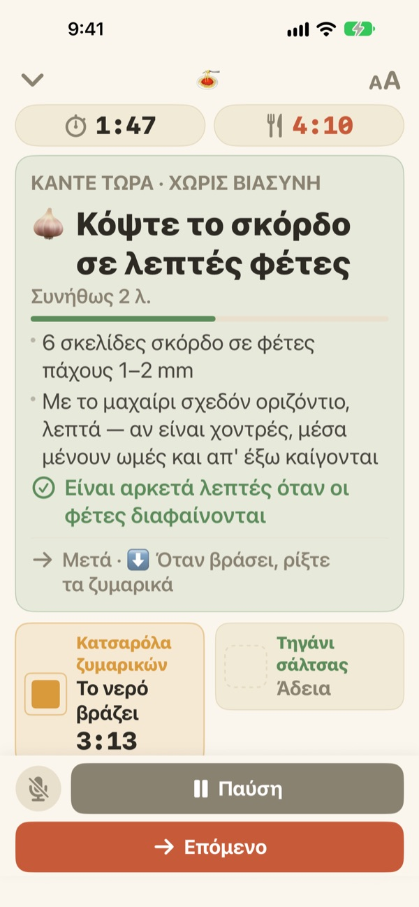

Τα ζυμαρικά βράζουν,
η σάλτσα ετοιμάζεται
Όταν δύο κατσαρόλες πάνε με διαφορετικό ρυθμό, το Geusaie δείχνει με μεγάλα γράμματα τη μία δουλειά που πρέπει να κάνουν τα χέρια σας τώρα. Η σάλτσα υπολογίζεται αντίστροφα από τη στιγμή που θα σουρώσετε τα ζυμαρικά.
Όλες οι λειτουργίες είναι δωρεάν. Δεν χρειάζεται λογαριασμός.

Δοκιμάστε το
Μαγειρέψτε ένα πιάτο aglio e olio σε 20πλάσια ταχύτητα. Πατήστε «Έναρξη μαγειρέματος» και μετά «Επόμενο» κάθε φορά που θα είχατε τελειώσει μια δουλειά. Δείτε πώς αλλάζει η κάρτα όταν έρθει η ώρα να σουρώσετε τα ζυμαρικά.
Τρία χρονόμετρα, και τα ζυμαρικά πάλι λάσπωσαν;
Ένα χρονόμετρο για τα ζυμαρικά, ένα για τη σάλτσα και το σκόρδο στο μυαλό, και κάποια στιγμή δεν ξέρετε τι προηγείται. Κόβετε σκόρδο ακριβώς όταν πρέπει να σουρώσετε, και η σάλτσα έρχεται δύο λεπτά αργότερα. Το Geusaie ξέρει τη συνταγή ως «πρώτα αυτό, μετά εκείνο» και σας λέει μόνο τη μία δουλειά που πρέπει να γίνει τώρα.
Ό,τι δεν περιμένει, κοκκινίζει
Σούρωμα ζυμαρικών, σκόρδο λίγο πριν καεί: όταν μια καθυστέρηση θα χαλούσε το φαγητό, η κάρτα γίνεται τερακότα και σας λέει να αφήσετε για λίγο το κόψιμο.
Όταν μια κατσαρόλα είναι έτοιμη, έρχεται ειδοποίηση ακόμη κι αν δεν κοιτάτε την οθόνη, μαζί με το τι πρέπει να κάνετε αμέσως.

Κόψιμο μόνο όταν τα χέρια είναι ελεύθερα
Κόψιμο σκόρδου, τρίψιμο τυριού, ζύγισμα: τίποτα από αυτά δεν έχει συγκεκριμένη ώρα, γι’ αυτό δεν μετράμε δευτερόλεπτα. Η μπάρα γεμίζει όσο τα χέρια σας είναι ελεύθερα, σταματά όταν φωνάζει μια κατσαρόλα και συνεχίζει από εκεί που σταματήσατε.
Ανάψατε το μάτι τρία λεπτά αργότερα; Όλα τα επόμενα μετακινούνται κατά τρία λεπτά. Το πρόγραμμα ξαναϋπολογίζεται κάθε φορά από όσα κάνατε πραγματικά.

Στον πάγκο, και συνεχίζετε με τη φωνή
Τέσσερα μεγέθη κειμένου για να διαβάζετε από ένα δυο βήματα μακριά, και η οθόνη δεν σβήνει όσο μαγειρεύετε.
Βρεγμένα χέρια; Πείτε επόμενο και η εφαρμογή πηγαίνει στην επόμενη δουλειά χωρίς άγγιγμα.

Τρία βήματα ως το τραπέζι
- 1
Διαλέξτε φαγητό
Βλέπετε περίπου πόση ώρα θέλει και πόσες κατσαρόλες χρειάζεστε.
- 2
Πατήστε «Έναρξη μαγειρέματος»
Πρώτα εμφανίζεται η πρώτη δουλειά, και τα χρονόμετρα των κατσαρολών ξεκινούν τη στιγμή που πατάτε.
- 3
Τελειώσατε; Επόμενο.
Πατήστε το κουμπί ή πείτε «επόμενο», και εμφανίζεται η επόμενη δουλειά.
Το χρώμα δείχνει πόσο επείγει
- Πράσινο
- Προετοιμασία. Χωρίς βιασύνη.
- Μουσταρδί
- Σειρά έχει μια κατσαρόλα. Τώρα, αλλά χωρίς άγχος.
- Τερακότα
- Αν περιμένετε, τα ζυμαρικά λασπώνουν ή το σκόρδο καίγεται. Τώρα.
- Πλαίσια κατσαρολών
- Το τετράγωνο που μικραίνει είναι ο χρόνος που μένει. Ο χρόνος των κατσαρολών δεν κρύβεται ποτέ.
Στη γραμμή χρόνου, οι διακεκομμένες μπάρες είναι δουλειές που μπορούν να περιμένουν.
Όλες οι λειτουργίες είναι δωρεάν
Δωρεάν
- Και οι δύο συνταγές
- Ξεχωριστό χρονόμετρο για κάθε κατσαρόλα και ολόκληρη η γραμμή χρόνου
- Ειδοποίηση όταν μια κατσαρόλα είναι έτοιμη
- «Επόμενο» με τη φωνή
- Τέσσερα μεγέθη κειμένου
- Άνοιγμα συνταγής από το Siri ή τις Συντομεύσεις
Στηρίξτε τον δημιουργό (προαιρετικά)
- Αν η εφαρμογή σάς βοηθά, μπορείτε να αφήσετε ένα μικρό φιλοδώρημα από τις Ρυθμίσεις
- Το φιλοδώρημα δεν ξεκλειδώνει τίποτα. Και χωρίς αυτό, όλες οι λειτουργίες είναι δικές σας
Μεμονωμένα φιλοδωρήματα, όχι συνδρομή.
Χωρίς λογαριασμό, χωρίς διαφημίσεις, και λειτουργεί και χωρίς ίντερνετ.
Συχνές ερωτήσεις
Λέω «επόμενο» αλλά δεν προχωρά.
Το κουμπί του μικροφώνου κάτω αριστερά είναι κόκκινο όταν ακούει και γκρι όταν είναι κλειστό. Την πρώτη φορά επιτρέψτε και το μικρόφωνο και την αναγνώριση ομιλίας· αν αρνηθήκατε, ενεργοποιήστε τα ξανά στις Ρυθμίσεις > Geusaie. Η εφαρμογή ακούει τη λέξη που γράφει το κουμπί «Επόμενο». Σε πολύ θορυβώδη κουζίνα, απλώς πατήστε «Επόμενο».
Η κατσαρόλα ετοιμάστηκε αλλά δεν ήρθε ειδοποίηση.
Ελέγξτε ότι οι ειδοποιήσεις είναι ενεργές στις Ρυθμίσεις > Γνωστοποιήσεις > Geusaie. Μια λειτουργία Εστίασης μπορεί να τις σιγάσει. Ειδοποιήσεις έρχονται μόνο όταν μια κατσαρόλα είναι έτοιμη· η προετοιμασία δεν σας πιέζει ποτέ.
Τι γίνεται με το πρόγραμμα αν ξεκινήσω αργότερα;
Ξαναϋπολογίζεται από όσα κάνατε πραγματικά. Αν ανάψετε το μάτι τρία λεπτά αργότερα, όλα τα επόμενα μετακινούνται κατά τρία λεπτά, και η σάλτσα μένει υπολογισμένη αντίστροφα από τη στιγμή που θα είναι έτοιμα τα ζυμαρικά.
Τα γράμματα είναι πολύ μικρά.
Στην οθόνη μαγειρέματος, πατήστε πάνω δεξιά το κουμπί μεγέθους κειμένου και διαλέξτε Κανονικό, Μεγάλο, Μεγαλύτερο ή Μέγιστο. Η επιλογή σας αποθηκεύεται.
Σβήνει η οθόνη όσο μαγειρεύω;
Όχι. Όσο μαγειρεύετε η οθόνη μένει αναμμένη, για να μη χρειαστεί να την αγγίξετε με βρεγμένα χέρια.
Ποια φαγητά περιέχει;
Aglio e olio (περίπου 15 λεπτά, 2 κατσαρόλες) και ζυμαρικά με κρέμα ντομάτας (περίπου 20 λεπτά, 2 κατσαρόλες), βασισμένα σε συνταγές από Serious Eats, Gimme Some Oven, RecipeTin Eats και The Burnt Butter Table. Ταιριάζει κάθε φαγητό με δύο κατσαρόλες ταυτόχρονα, οπότε πείτε μας ποια συνταγή θα θέλατε.
Καταγράφεται η φωνή μου;
Όχι. Η εφαρμογή ακούει μόνο τη λέξη «επόμενο» και δεν ηχογραφεί ούτε αποθηκεύει ήχο. Αν η συσκευή το υποστηρίζει, η αναγνώριση γίνεται στη συσκευή. Δεν συλλέγονται προσωπικά δεδομένα.
Ανοίγει με το Siri;
Ναι. Διαλέξτε ένα φαγητό στο Siri ή στην εφαρμογή Συντομεύσεις και ανοίγει αμέσως η οθόνη μαγειρέματός του. Τα χρονόμετρα ξεκινούν όταν είστε έτοιμοι να βάλετε το νερό και πατήσετε «Έναρξη μαγειρέματος».
Σε ποιες συσκευές λειτουργεί;
Σε iPhone και iPad με iOS 17 ή νεότερο. Δεν χρειάζεται λογαριασμός ούτε σύνδεση στο ίντερνετ.
Πώς αναφέρω πρόβλημα ή προτείνω συνταγή;
Από τις Ρυθμίσεις > Αποστολή σχολίων μέσα στην εφαρμογή ή με email στη διεύθυνση παρακάτω. Αν γράψετε το μοντέλο της συσκευής και την έκδοση iOS, θα το εξετάσουμε πιο γρήγορα. Συνήθως απαντάμε μέσα σε λίγες μέρες.
Κολλήσατε κάπου, είδατε κάτι περίεργο ή έχετε μια συνταγή στο μυαλό σας; Γράψτε στο leeo@kakao.com.